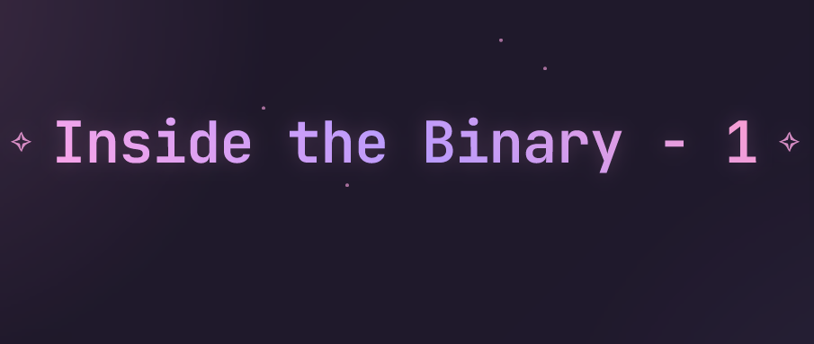
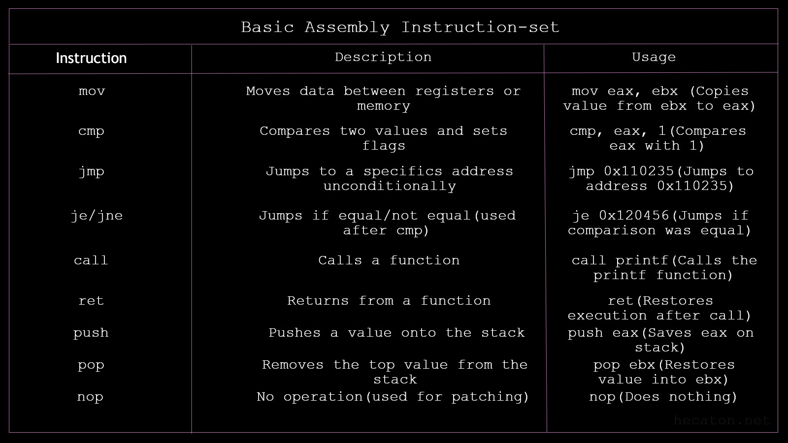
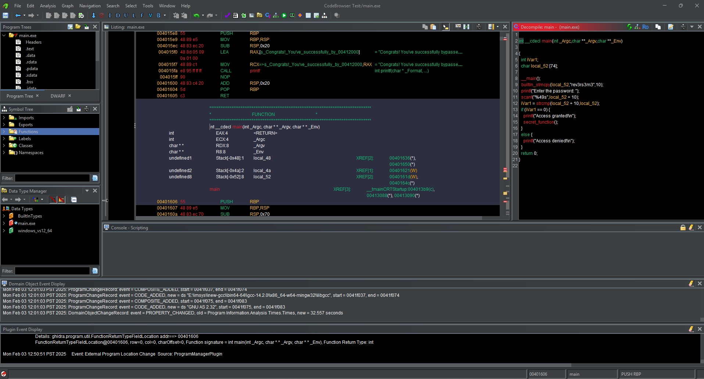
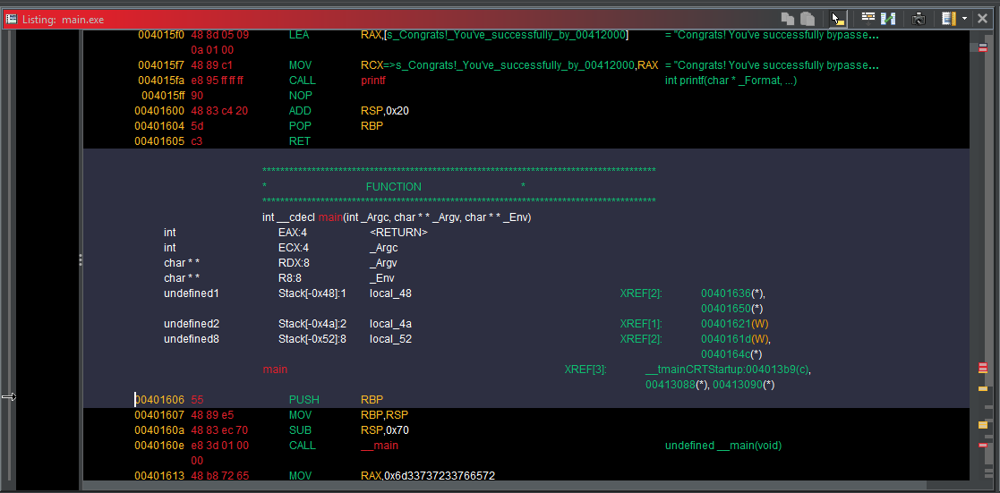
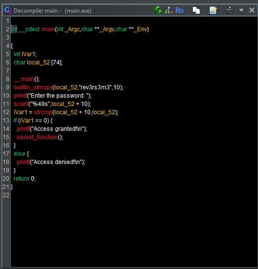

Inside the Binary - 1
Overview
I am making this course for people with absolutely no experience in the field of reverse engineering fosr completely free.
Introduction
Tools
In this course we are going to be using free and open-source tools like Ghidra x64dbg, which are quite user-friendly.
Understanding assembly instructions
In the image below i have shared some basic assembly instructions and how they work. As we progress trough this course we are going to learn more instructions that we are going to need.
 Assembly might seem hard at first, but trust me overtime you will start understanding it quite easily, it's just the first weeks of learning that are going to feel hard. Don't be ashamed to consult Google or a chatbot for help.
Step 1: Importing and Analyzing the Binary
Download the learning material from my Github and create a folder where you feel like it and move the contents of Day 1 in there.
After opening Ghidra and creating a new project, import the compiled day1.exe file. Double-click the file to open it in CodeBrowser. Ghidra will automatically prompt you to analyze the binary, click Yes to allow Ghidra to perform the analysis and give it some time. This identifies functions, strings and other segments in the binary.
Step 2: Navigating Ghidra's Intersface
CodeBrowser Window: The main window where you'll spend most of the time. On the left side, you'll see the Symbol Tree and Listing panels. The Symbol Tree shows functions, variables, and other symbols in the binary, and the Listing Panel displays the disassembled code.
Step 3: Disassembling and Decompiled View
Disassembly View: In the Listing Panel, you'll see assembly code. Ghidra tires to map this to high-level code, but sadly some parts will be in assembly.
Decompiled View: the decompiler can be accessed from the right side of the screen by clicking on the Decompile tab. This will show a high-level representation of the code in a C-like syntax. This is useful for understanding higher-level logic like the password check.
Step 4: Locating the Password Check Logic
In the Symbol Tree, add the Filter main to look for the main function and double-click to jump to it. You will see assembly code and some high-level code in the decompiled view.
Follow the flow of the code. You will eventually encouter the logic responsible for comparing the user input with the correct password. Pay attention to how the program processes the comparison, and look for function calls like strcmp in the disassembly.
To understand the logic better you can can open the Function Graph which is helpful in understanding how functions are called and how the program execution flows, to open the Function Graph go to Window > Function Graph.
Step 5: Analyzing the Control Flow and Understanding Program Logic
Function Graph(FG): Ghidra provides a Function Graph for each function, which is helpful for understanding how functions are called and how the program execution flows. Go to Window > Function Graph and analyze the code that is executed after the password comparison. You will notice that the program will call secret_function() if the correct password is entered, identify this function and trace its execution.
Step 6: Modifying The Execution Flow (Patching)
You can use Ghidra to modify the behavior of the program by changing its instructions. For example, you can modify the comparison so that it always returns true. which will bypass the password check entirely.To do this:
- Find the strcmp function call in the disassembly
- Modify the coparison logic to always return 0(indicates the strings match)
Patch the binary by Right-clicking on the changed instruction and select Patch Instruction. This will allow you to modify the executable without needing to recompile it.
Step 7: Identifying the password
If you paid attention you would of identified the password by now since Step 4, if you check the Decompile View on the right and look for the main function there was a hardcoded string "rev3rs3m3" :).
Conclusion
Reverse engineering is only hard if you make it hard and overthink. From my experience just thinking out of the box will be a great aid. If you where thinking outside the box since the beginning you would of have noticed the hardcoded password, if you did gz! Anyways thank you for reading my course <3.